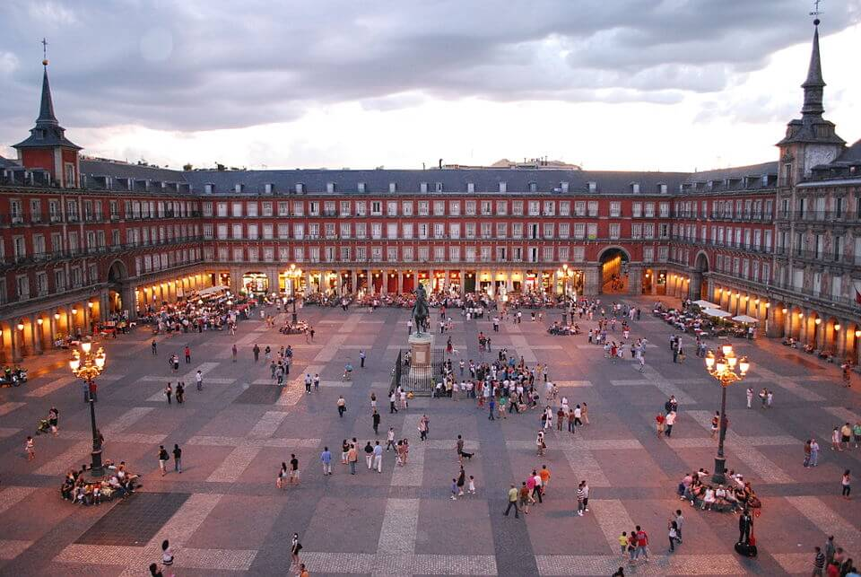

Esta ciudad de Extremadura conocida como “la Villa de los mil y un escudos” siempre merece un viaje. Te recomendamos acceder a la ciudad por su entrada tradicional: el Arco de la Estrella, del siglo XVIII y con un ancho pensado para que pasaran los carruajes. A partir de aquí, se presentará ante ti la amplia Plaza Mayor, siempre llena de vida, rodeada de soportales y perfecta para tomar algo.
Lugares que puedes visitar
Plaza Mayor
Es sin duda, un imprescindible de la ciudad. Esta rodeada por soportales del siglo XVI y, en ella, encontrarás:
El Ayuntamiento, un bonito edificio del siglo XIX.
La Torre de Bujaco es la más importante de la ciudad, una construcción de 25 metros de altura y origen árabe. En su interior podrás visitar el Centro de Interpretación de las Tres Culturas. Además, no te puedes ir sin subir a lo alto de la torre.
La Torre de los Púlpitos, de origen cristiano y 16 metros de altura, está adosada a la parte externa de la muralla. Se puede visitar entrando a través de la torre de Bujaco.
La Torre de Yerba, una construcción de origen árabe, en concreto de las últimas en construirse mientras Cáceres estuvo en poder musulmán.
La Ermita de la Paz, se construyó sobre los restos de una capilla renacentista del siglo XVI.
El Arco de la Estrella, es la principal puerta de entrada al recinto amurallado de Cáceres. Aunque se abrió en el siglo XV, su forma actual es obra de Manuel de Lara Churriguera y se realizó en 1726.

Plaza de Santa María
Esta plaza es otra de las más importantes de la ciudad. Se utilizó durante mucho tiempo como mercado e incluso como lugar de celebración de bodas de la nobleza. En ella verás:
La Concatedral de Cáceres, una iglesia que se remonta al siglo XIII pero que, tras su destrucción, se reconstruyó como es ahora durante los siglos XV y XVI. No te puedes perder su interior de estilo gótico y las vistas desde su torre campanario, desde donde observarás una panorámica de 360º.
El Palacio Episcopal. Su parte más antigua data del siglo XIII y su última modificación del siglo XVII.
El Palacio de Hernando de Ovando, de estilo renacentista. Construido en el siglo XV y reformado en el XVIII.